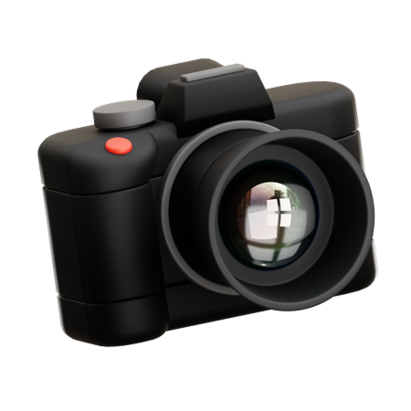
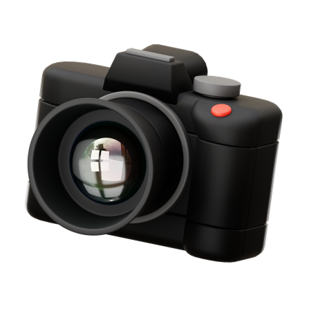
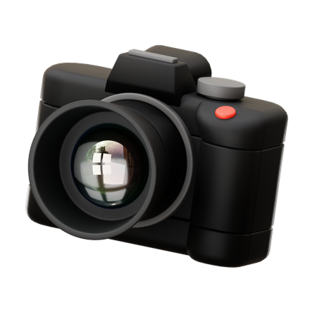
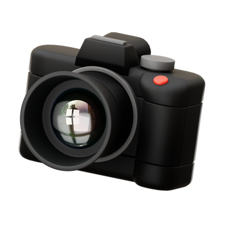
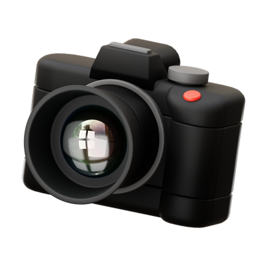

 


Offline Short-Term Courses in Photography & Videography

Offline Short-Term Courses in Photography & Videography
At the International Institute of Still & Motion Research, we believe visual storytelling has the power to inspire, inform, and transform. Whether you're a beginner eager to explore the basics or a passionate creative ready to sharpen your craft, our carefully curated offline short courses in photography and videography are designed to guide you every step of the way.


I'm a seasoned photographer and cinematographer with 18 years of experience capturing moments that speak louder than words. My journey began with a Diploma in Photography & Cinematography from RIPT, Kolkata, and evolved through years of professional work, corporate insight (Panasonic), and national-level mentorship with brands like Canon and Panasonic.
Currently, I also serve as visiting faculty at Brainware University, Kolkata, where I teach photography and cinematography to Multimedia students. This institute is my way of giving back to the art that shaped my life.
To be a globally recognized institute that nurtures creativity and technical excellence in photography and videography, empowering individuals to tell compelling visual stories that inspire and impact the world.
Provide High-Quality Education: Deliver cutting-edge training combining theory with practical skill-building.
Foster Creativity & Innovation: Help students discover their voice and style.
Promote Ethical & Responsible Media: Encourage truth, authenticity, and respect in storytelling
Create a Thriving Creative Community: A network that grows and supports each other.
All courses are delivered offline through hands-on learning and live mentorship.
Mastering the Basics - Perfect for beginners ready to build a solid foundation.
Crafting the Photographer’s Eye - For those ready to level up creatively and technically.
Duration: 4 Months | Sessions: 16 Intensive Classes
Level: Intermediate to Advanced
Take your storytelling to the next level through the powerful language of motion. This professionally structured course blends the art and technique of videography and cinematography—designed for aspiring filmmakers, content creators, and creative professionals.
Build a strong base in video creation by understanding the essentials of video production and camera craft.
Crafting the Photographer’s Eye - For those ready to level up creatively and technically.
Shape your raw footage into compelling visual stories using industry-standard editing workflows
Crafting the Photographer’s Eye - For those ready to level up creatively and technically.